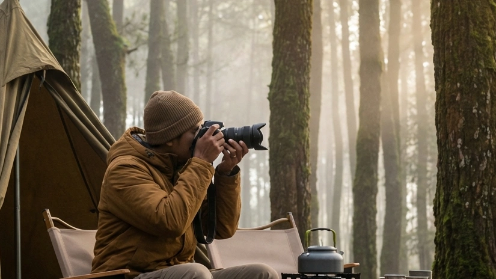

Bagi para penikmat keindahan visual dan para pencari ketenangan jiwa, melarikan diri dari lanskap beton perkotaan menuju rimbunnya pepohonan adalah sebuah keharusan. Di tengah maraknya berbagai destinasi wisata modern buatan tangan manusia, keindahan alam yang otentik tetap menjadi primadona yang tak tergantikan. Jika Anda sedang mengetikkan pencarian tentang Eksplorasi Area Kemah Hutan Pinus Batu: Spot Foto Alam Tersembunyi di Malang, Anda sedang memegang kompas yang mengarah pada salah satu lokasi paling magis di kawasan Jawa Timur.
Kota Batu tidak hanya terkenal dengan hawa dinginnya yang menusuk hingga ke tulang atau deretan taman hiburan berskala internasionalnya. Jauh dari hingar-bingar jalan raya utama, terdapat kantung-kantung alam berupa area hutan pinus yang sangat asri dan menanti untuk dieksplorasi. Artikel panduan komprehensif ini akan menguliti secara mendalam mengapa hutan pinus Batu menjadi magnet bagi para fotografer lanskap, bagaimana cara Anda bisa bermalam di sana tanpa harus kehilangan kenyamanan fasilitas modern, serta deretan rahasia untuk menangkap momen visual terbaik yang akan membuat linimasa media sosial Anda dibanjiri decak kagum.
1. Pesona Tersembunyi Hutan Pinus di Kota Batu
Menjejakkan kaki di kawasan perkemahan yang didominasi oleh pohon pinus memberikan sensasi atmosfer yang amat berbeda jika dibandingkan dengan jenis hutan tropis lainnya di Indonesia.
Kesejukan Udara Pegunungan yang Menyegarkan
Pohon pinus dikenal secara ilmiah memiliki kemampuan luar biasa dalam menyaring dan memurnikan udara. Daun-daun jarumnya melepaskan senyawa alami berupa minyak atsiri (fitonsida) yang memberikan aroma terapi khas kayu-kayuan. Menghirup aroma ini di tengah udara bersuhu 15 derajat Celcius secara klinis terbukti mampu merelaksasi otot yang tegang, memperlambat detak jantung yang berpacu akibat stres, dan memberikan efek healing yang sesungguhnya pada sistem syaraf pusat manusia.
Suasana Syahdu di Bawah Kanopi Alami
Struktur batang pohon pinus yang lurus dan kokoh dengan dahan yang merapat di bagian atas menciptakan sebuah canopy (kanopi) atau atap alami yang sangat masif. Kanopi ini berfungsi ganda: menahan terik matahari siang sehingga area dasar perkemahan selalu terasa sejuk dan redup, serta memecah kekuatan angin gunung yang berhembus kencang sehingga suasana di bawahnya senantiasa terasa sangat syahdu, teduh, dan amat mendamaikan.
BACA JUGA (Keajaiban Alam):
2. Daya Tarik Utama: Spot Foto Alam Estetik dan Instagramable
Daya tarik utama yang membuat para wisatawan rela bermalam di kawasan Eksplorasi Area Kemah Hutan Pinus Batu: Spot Foto Alam Tersembunyi di Malang adalah potensi fotografinya yang tiada batas.
Fenomena Ray of Light yang Memukau di Pagi Hari
Bagi para fotografer, ini adalah "Cawan Suci" dari fotografi alam liar. Ketika matahari mulai menyingsing di ufuk timur, sinar paginya tidak akan langsung menerangi seluruh hutan. Sinar keemasan tersebut akan berusaha menerobos dari sela-sela batang dan daun pinus, kemudian membentur embun dan kabut tipis pegunungan yang masih melayang di udara. Tabrakan antara cahaya dan kabut ini menciptakan pilar-pilar cahaya vertikal yang sangat dramatis, dikenal luas sebagai fenomena Ray of Light (RoL). Berdiri di tengah pilar cahaya ini seakan menempatkan Anda di dalam sebuah adegan film fantasi *Hollywood*.
Latar Belakang Siluet Pohon Pinus dan Kabut Tipis
Saat fajar atau menjelang senja, perpaduan antara cahaya matahari yang meredup dengan kabut tipis (mist) yang menyelimuti area camping ground akan menghasilkan siluet batang-batang pohon yang berjejer rapi bagaikan pilar-pilar raksasa. Komposisi ini menyajikan bingkai gambar (framing) alami yang amat aesthetic dan Instagramable untuk dijadikan latar belakang foto potret diri maupun foto keluarga yang eksklusif.

Momen ketika kabut pegunungan berpadu dengan cahaya hangat mentari pagi menciptakan dimensi visual yang amat memanjakan lensa kamera. (Dokumentasi: Batu Sunrise Camp)3. Panduan Menuju Area Kemah Hutan Pinus Batu
Keindahan yang tersembunyi bukan berarti Anda harus menempuh medan *off-road* yang membahayakan nyawa. Infrastruktur wisata Kota Batu telah dirancang untuk sangat memudahkan mobilitas Anda.
Rute Perjalanan yang Mudah Diakses Kendaraan
Berbeda dengan lokasi kemah di pegunungan terpencil, area kemah pinus unggulan di Batu seperti kawasan Goa Pinus atau Batu Sunrise Camp telah didukung oleh jalan beraspal makadam yang sangat mulus dan lebar. Rute pendakiannya landai dan tidak berkelok tajam, sehingga amat aman dilalui oleh kendaraan roda dua, mobil sedan, hingga mobil keluarga tipe MPV yang berdimensi panjang.
Lokasi Strategis Dekat Pusat Kota
Satu hal yang membuat kawasan Batu begitu digemari adalah jaraknya yang sangat strategis. Spot perkemahan eksotis di bawah rimbunan pinus ini rata-rata hanya berjarak 15 hingga 25 menit saja dari Alun-Alun Kota Batu. Artinya, jika Anda mendadak kehabisan perbekalan camilan atau membutuhkan kebutuhan logistik medis secara darurat, akses menuju peradaban dan minimarket masih teramat sangat terjangkau.
4. Fasilitas Lengkap untuk Kenyamanan Berkemah
Konsep berkemah di tahun 2026 ini bukan lagi tentang uji ketahanan fisik (survival), melainkan tentang rekreasi yang memanjakan tubuh (*Comfort Camping*).
Toilet Bersih dan Akses Listrik Memadai
Hambatan terbesar saat ingin menginap di hutan adalah urusan sanitasi. Namun, pengelola *campground* profesional telah menanamkan investasi besar untuk membangun blok-blok kamar mandi berdinding keramik. Di dalamnya terdapat kloset jongkok maupun kloset duduk dengan sistem flushing yang higienis, serta pancuran air bersih yang tiada henti mengalir. Selain itu, Anda tidak perlu lagi cemas ponsel kehabisan baterai untuk memotret karena pengelola telah menyebar instalasi colokan listrik (stop kontak) di setiap kapling area tenda.
Paket Sewa Tenda Anti Ribet
Anda ingin *healing* tanpa repot memanggul peralatan berat? Manfaatkan layanan Paket Sewa Tenda All-In. Setibanya Anda di area parkir, sebuah tenda tipe double layer (anti-badai dan anti-embun) telah berdiri dengan gagah. Di bagian dalamnya, kasur spons yang tebal dan sleeping bag berbahan polar yang wangi telah tersusun amat rapi. Anda benar-benar hanya dituntut untuk datang, meletakkan tas, dan mulai menekan tombol *shutter* kamera Anda.
BACA JUGA (Tips Fasilitas):
5. Aktivitas Seru Selain Berburu Foto Estetik
Setelah memori memori kamera Anda penuh dengan hasil jepretan lanskap, jangan lupakan esensi utama dari berkemah: menikmati kehadiran fisik (mindfulness).
Bersantai dengan Hammock di Antara Pepohonan
Inilah aktivitas paling wajib jika Anda berada di area bertegakan lurus. Ikatkanlah hammock (tempat tidur gantung berbahan parasut) di antara dua batang pinus yang kuat. Berayunlah dengan pelan sambil membaca buku novel favorit, atau sekadar memejamkan mata menghayati alunan melodi musik akustik dari *speaker* portabel Anda. Ini adalah definisi hakiki dari gaya hidup slow living.
Malam Keakraban dengan Api Unggun dan Barbeque
Ketika malam mulai mendingin dan warna-warni *City Light* kota Malang di kejauhan mulai menyala, nyalakanlah perapian Anda di area fire-pit komunal. Pangganglah irisan daging tipis, sosis, atau *marshmallow*. Duduk mengelilingi kehangatan api kecil ini adalah medium katalisator yang paling mujarab untuk mencairkan suasana dan melangsungkan deep-talk (obrolan mendalam) yang jujur dan tulus bersama orang-orang tercinta.
6. Tips Mendapatkan Foto Terbaik di Hutan Pinus
Agar hasil visual Eksplorasi Area Kemah Hutan Pinus Batu: Spot Foto Alam Tersembunyi di Malang Anda semakin spektakuler layaknya fotografer pro, aplikasikan tips teknis berikut:
Pemilihan Waktu (Golden Hour)
Waktu adalah elemen krusial dalam fotografi alam. Hindari memotret di siang hari bolong karena cahaya matahari akan jatuh tegak lurus, menciptakan bayangan yang kasar (*harsh shadow*). Bidiklah kamera Anda pada waktu Golden Hour, yakni sekitar pukul 05:30 - 06:30 WIB (sesaat setelah fajar menyingsing) atau pukul 16:30 - 17:30 WIB (sesaat sebelum matahari terbenam). Pada rentang waktu ini, cahaya matahari akan bersinar dari sudut rendah, menciptakan warna jingga hangat yang lembut dan menonjolkan tekstur dimensi kulit pohon pinus.
Penggunaan Properti Pendukung
Manfaatkan properti kemah Anda untuk membangun sebuah storytelling visual. Menyalakan lampu gantung hias (string lights) di luar tenda, menempatkan cangkir kopi alumunium yang mengepulkan asap di atas meja lipat, atau menggunakan lentera minyak tanah klasik sebagai objek utama dengan latar belakang (background) hutan pinus yang dikaburkan (*blur/bokeh*) akan mendongkrak nilai estetika foto Anda secara amat drastis.
7. Kesimpulan
Pencarian akan keindahan visual yang selaras dengan ketenangan batin telah terjawab tuntas melalui eksplorasi mendalam pada Area Kemah Hutan Pinus Batu: Spot Foto Alam Tersembunyi di Malang. Destinasi eksotis ini menawarkan pesona magis Ray of Light yang teramat syahdu, berpadu sempurna dengan kualitas udara pegunungan yang menyehatkan. Anda tidak perlu lagi ragu memikirkan keterbatasan fasilitas, karena pengelola perkemahan modern layaknya Batu Sunrise Camp telah menyulap hutan pinus menjadi surga peristirahatan (*Comfort Camping*) yang dilengkapi tenda anti-badai, listrik 24 jam, dan sanitasi yang higienis. Aturlah cuti akhir pekan Anda, siapkan lensa kamera terbaik yang Anda miliki, dan bersiaplah membiarkan alam Kota Batu membingkai kenangan liburan Anda menjadi sebuah mahakarya visual yang abadi.